| 日付 | 2020年7月12日（日） |
|---|---|
| 山域 | 大菩薩 |
| メンバー | 家族（妻、長女・9歳、長男・7歳） |
| 山行形態 | 子連れ日帰り |
| アクセス | 車 |
| ルート (Map) | 丸川峠分岐駐車場 (9:16) - (10:48) 上日川峠 - (11:17) 福ちゃん荘 - (12:12) 大菩薩峠 - (12:24) 高台 (12:51) - (12:55) 大菩薩峠 - (13:32) 福ちゃん荘 - (15:04) 丸川峠分岐駐車場 |
県またぎ移動が解禁されてから、日曜は雨ばかりでどこにも出かけられていない。
曇りの日でもよいから山に行こうと考えていたが、曇りの日すらなく雨ばかり。
今年の梅雨は例年以上に雨が多い。
久々に日曜が梅雨の晴れ間になりそうだったので、ようやく山に行ける。
ところが、再び妻が階段から落ちて、計画は不透明に…
登山日当日の朝に、大菩薩嶺なら登れそうという事で、現地に向かう。
上日川峠に向かう車道を走って行くと、なんと道路が閉鎖されている。
昨年の台風の影響で道路はまだ復旧されていないようだ。
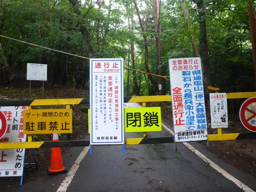
しかたなく側の丸川峠分岐駐車場に車を停める。標高1030m。
ここは大菩薩嶺の登山口だが、車で登ろうと思っていた標高差560mを足で登る必要がある。
これでも公共交通機関を使った登山よりは楽なのだが。
同じく道の閉鎖を知らなかった2パーティがおり、ともに頑張ろうと声を掛け合う。

登山開始。下から大菩薩嶺に登るのは11年振りだ。
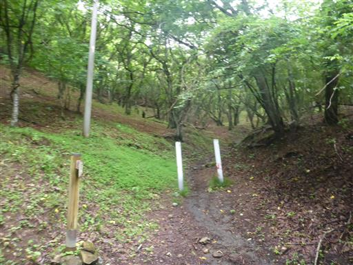
ザトウムシを捕まえる。2本の足が特に長い。
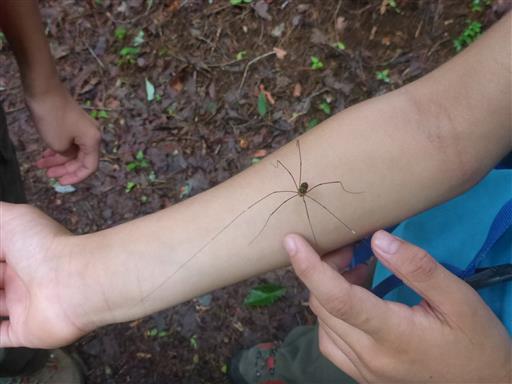
千石地蔵に到着。
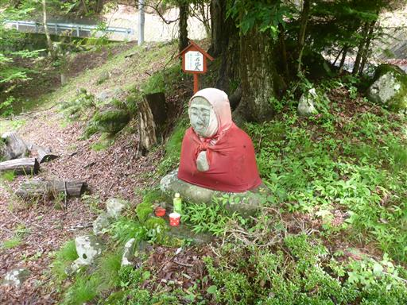
登山道が深く削られて、その横の高台に別の道ができている。
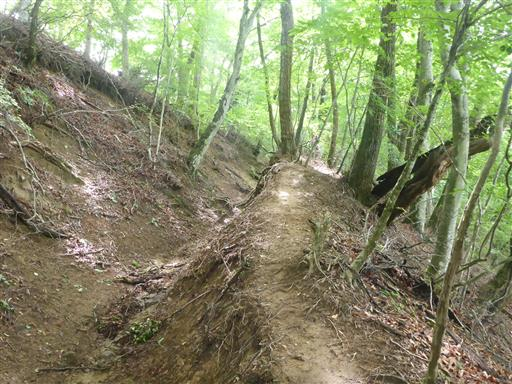
半分枯れた風格のある木。
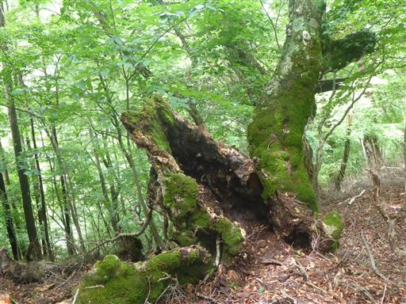
ピンク色のつぶつぶ。少し気持ち悪い。
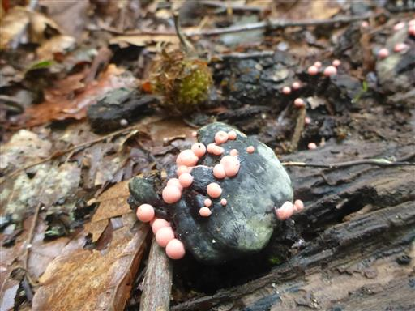
やまなしの森林100選。久しぶりに見た。
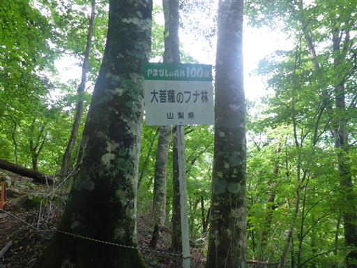
しばらく歩くとガードレールが見えてくる。ここで車道を横切る。
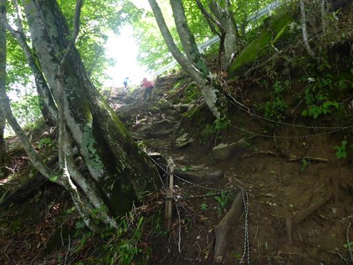
再び森の中へ。
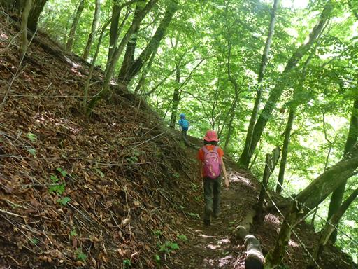
タイヤがたくさん埋まっている。
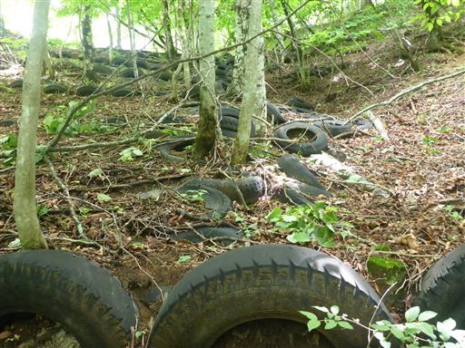
大きな木が倒れていて、登山道のところでちょうど幹が折れて道を塞いでいる。
息子はすんなり通って行ったが、大人は大変だ。
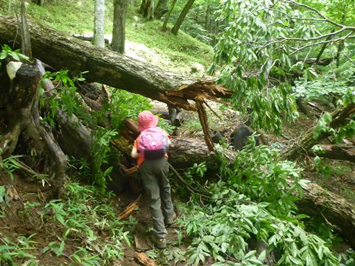
しばらく登ると、倒木の根元に出てくる。
根っこが地面を抉って倒れているのではなく、根が全て千切れている。
もう老木か枯木だったのだろう。
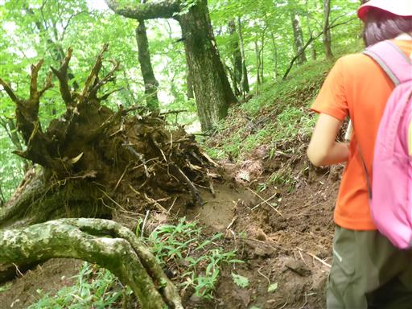
立派な栗の木の上にコハウチワカエデの木が生えている。
この栗の木も老木でもうすぐ倒れそうだ。
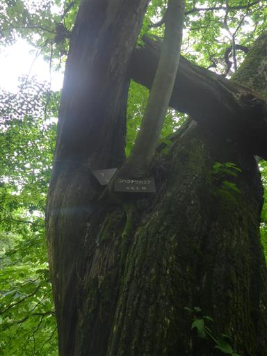
立派なブナの木。この辺りは大木が多い。
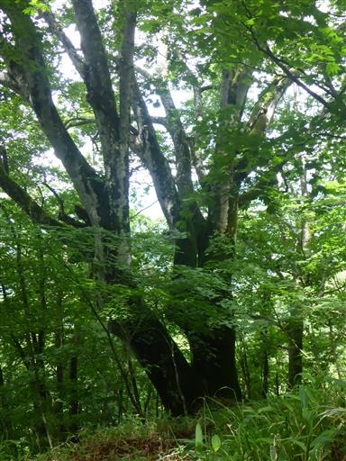
明るい森の中を登って行く。
元々登る予定でなかったプラスアルファの登りと考えると少し足が重い。
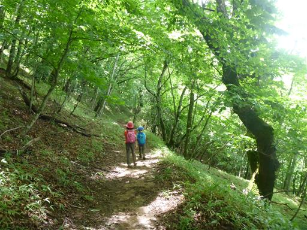
上日川峠に到着。駐車場には車が多数停まっている。
空いている大菩薩を歩けるかと思ったら、反対側からの道は通じていたようで、
多くの登山者はここまで車で来ているようだ。ちょっとがっかり。
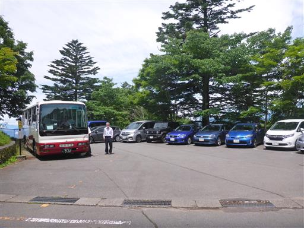
気を取り直して、ここから大菩薩峠を目指す。
なぜか傘が掛かっていて、中に水が溜まっている。
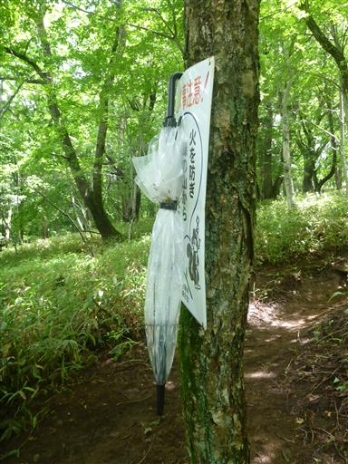
ここも気持ちの良い森。隣の車道と並行して登って行く。
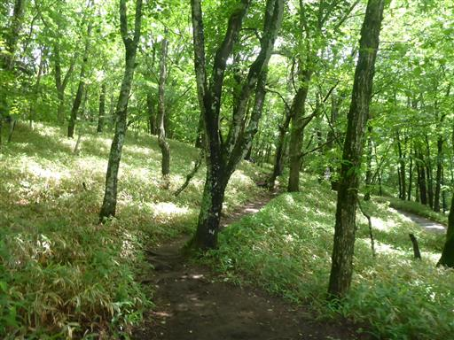
福ちゃん荘に到着。
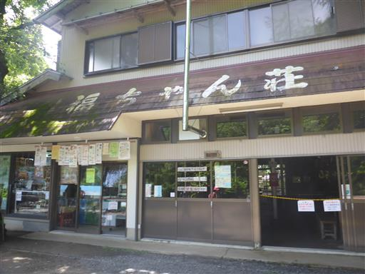
福ちゃん荘の温度計。
2007年、2009年と確認した温度計だがだいぶ損傷が進んでいる。
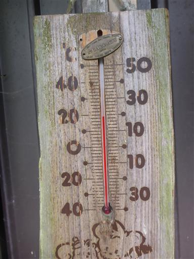
富士見山荘付近から富士山が見えている。
樹木が生い茂ってだいぶ展望は悪くなった。
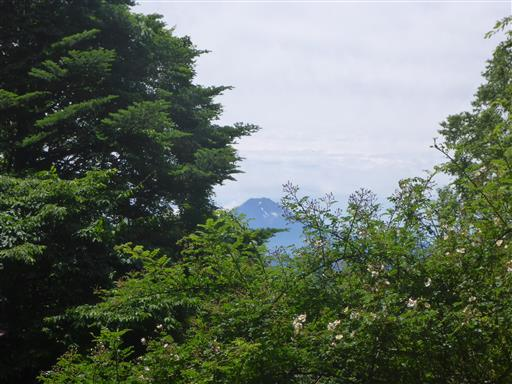
きれいな沢。水に手を付けるとものすごく冷たい。

苔生した岩が並んでいる。
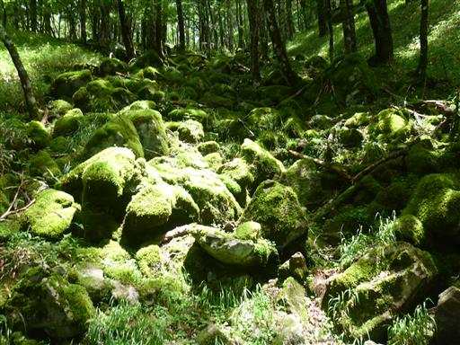
大菩薩峠までは広くて傾斜が緩い道が続く。
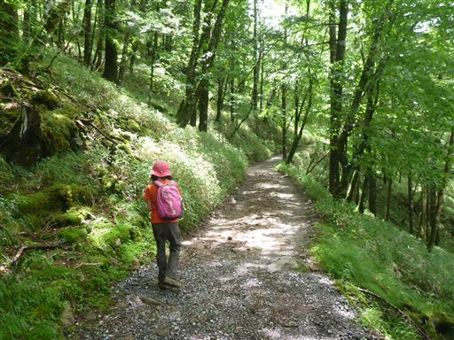
鹿を発見。皆こちらを向いているが、逃げようとはしない。
だいぶ人間に慣れているようだ。
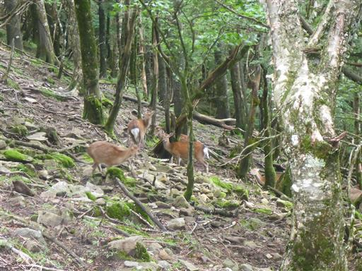
大菩薩峠に到着。標高1900m。
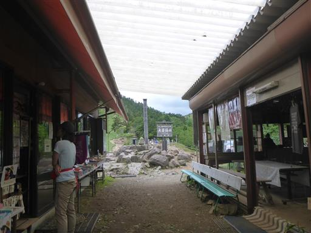
奥多摩方面の展望。展望はあるがだいぶ雲が多い。
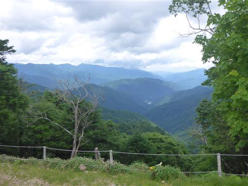
もう12時を過ぎているため、大菩薩嶺は諦めて
左に見える高台まで登って昼食をとることにする。
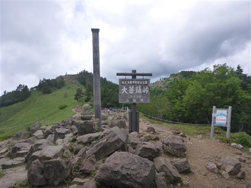
高台まで登ると富士山が望める。少し雲がかかっているが、視界はクリアだ。
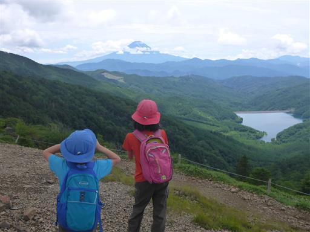
向かう予定だった大菩薩嶺方面。
久々に下から登るのも悪くなかったが、目的地に到着できなかったのは残念。
がっつり歩く予定ではなかったので、朝遅めの出発にしたのが仇となった。
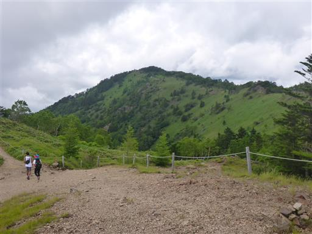
昼食をとったら早々に下山開始。
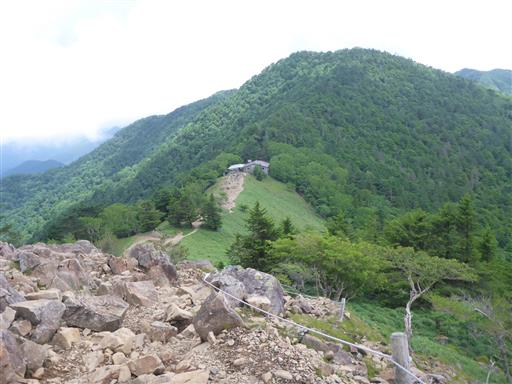
下山中に傷ついた木を発見。クマの爪痕だろうか？
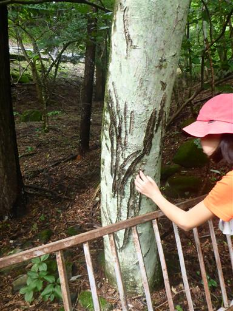
駐車場に到着。
思い通りの山行にはならなかったが、標高差900m程度を歩けて、久々に良い運動になった。
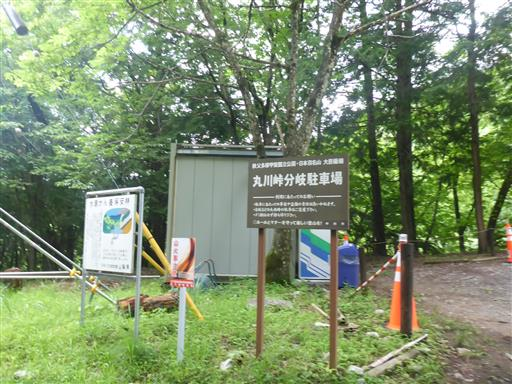